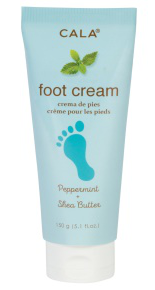
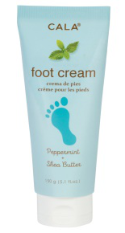

Foot care and Hygiene
Taking care of your feet now can help prevent foot problems down the road.
If you already have foot problems, good foot hygiene will help keep those problems in check,
and may help some of them disappear altogether.
1. Inspect feet daily. Look for cuts, bruises, blisters, red spots. Feel for lumps or bumps.
2. Wash feet daily. Rinse off soap completely and dry your feet thoroughly,
especially between the toes.
3. Trim toenails straight across and not too short. Don’t cut or dig at corners.
4. Do not trim, shave or use over-the-counter medications to dissolve corns or calluses;
see a foot specialist instead.
5. Wear clean socks and change them every day;
more frequently if you sweat profusely to help avoid athlete’s foot
(Professionals suggest wearing padded socks made of man-made fibers
and fiber blends for their moisture-wicking properties).
 
